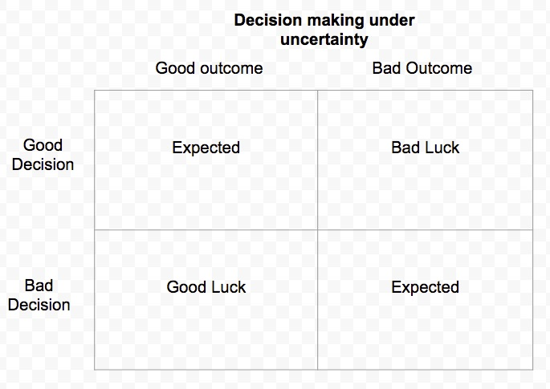

[caption id="" align="alignnone" width="1688"] Thinking in Bets[/caption]
Thinking in Bets[/caption]
[caption id="attachment_3176" align="alignnone" width="685"] Decision Theory Model[/caption]
{kind=link}
Overview
- Good quality decisions do not always yield good outcomes
- All decision makings in real life are made under uncertainty. All decisions are essentially bets about the future
- Decisions made in Chess are not made under uncertainty because every single permutation can be pre-computed unlike Poker.
- Most real life decisions are not zero-sum games
On outcomes
- Real life outcomes are probabilistic
- Outcomes are influenced primarily by the quality of our decision (skill) and luck
- While the outcomes might not always be positive, having a process in place to constantly improve the quality of decision making will tilt the odds in our favor
Implications
- Do not change strategy drastically just because a few hands did not turn out well in the short run
- For each premise understand what the base rate is
- Learn to be at peace with not knowing
- Recognize the limits of our own knowledge
- A great decision is a result of a good process. A good process attempts to accurately represent our own state of knowledge
- Watching: It is free to learn from other people's experience
Cognitive biases that impede good decision
- Decisions are the outcomes of our beliefs
- Hindsight bias impedes against quality decision making
- Guard against black or white decision making
- Availability bias means lagging any prior conflicting data, our default setting is to believe what we hear is true
- Selective bias and consistency bias, means we are unwilling to change our mind despite contrary signals from the environment
- Avoid attribution bias
Related Readings
- *Theory of Games and Economic Behavior*, Jon Von Neumann
- *Ignorance: How it drives Science*, Stuart Firestein
- *Stumbling on Happiness*, Daniel Gilbert